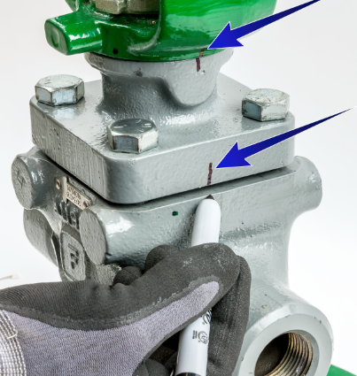

ch2 pass: figrow; bullets to key concepts
Body Disassembly



First, every time: isolate the valve, release pressure from both sides, drain it, and lock out.

First, every time: isolate the valve, release pressure from both sides, drain it, and lock out.